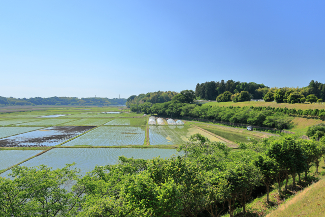
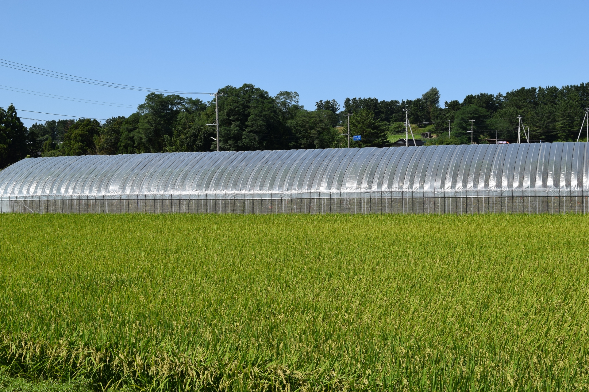

古代の信仰から近代のまちづくりまで
旧豊田町を構成していた加茂・寺谷地区は、遠江でも有数の農業地帯でした。古代からの信仰に根ざしながら、近世から近代にかけて新しいまちへと変遷してきた地域。地名、寺社、古い村落構造――それらすべてが、加茂・寺谷の歩みを物語ります。

「加茂（かも）」という地名は、古代の信仰地を示すものとされています。全国に分布する加茂という地名は、京都の賀茂信仰に関連するものが多く、当地もまたこうした古い信仰圏の一部でした。古代から中世にかけて、遠江の加茂・寺谷地区には複数の寺社が置かれ、周辺地域の精神的な中心地となってきました。
「寺谷（てらだに）」の地名は、より直接的に地形を表しています。この地名が示すように、複数の寺院が谷間に点在していました。谷間という地形は、水利に恵まれると同時に、信仰の聖地として見なされることが多かったのです。古文書の記録によれば、平安時代には既にこの地に複数の寺院が存在し、農民たちの信仰を集めていました。
古代の地割りの痕跡は、現在のまち並みの下に今も息づいており、古地図と現地を照らし合わせると、その構造が明らかになります。地名は、地域の歴史を読み解くための最も基本的な手がかりなのです。

加茂・寺谷地区は、東海道からほどほどの距離にあり、東海道の物流を支える支路としての機能を担ってきました。地域内の道筋の多くは、古代の官道の流れを受け継いでおり、中世から近世を通じて人と物の流通を支えていました。
江戸時代に入ると、加茂・寺谷地区は遠江でも有数の農業地帯として知られるようになります。水利に恵まれた土地は、稲作を中心とした農業生産の中心地となり、この地域の農産物は周辺の町市場に供給される重要な食糧源でした。江戸幕府の政策により新田開発が奨励され、耕地面積は大幅に増加しました。
耕地整理の過程で描かれた古い絵図には、当時の村の構成と人々の営みが詳細に記録されています。村役人の記録からは、農業用水路の管理、年貢の徴収、村民の生活ぶりなど、当時の村落社会の実態が浮かび上がってきます。
明治維新を経て豊田町が誕生すると、加茂・寺谷地区も急速な近代化の波に呑み込まれていきました。農業の機械化、教育制度の整備、交通網の拡充――大正から昭和初期にかけての急速な変化が、この地域の景観と社会構造を大きく変えていったのです。